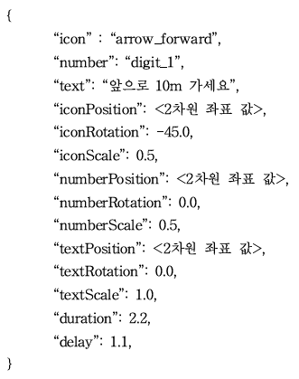
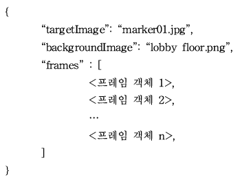
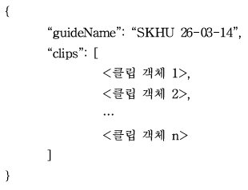

프레임은 '순번' 객체, '화살표' 객체, '안내 문구' 객체 등으로 구성되며, 시간 흐름에 따른 프레임의 객체를 표시하기 위하여 재생 시간, 지연 시간을 포함한다. 이외에도, 각 객체의 위치, 방향, 크기 조절 값을 설정하여 원하는 각 객체의 배치를 조절할 수 있다.
다음은 프레임을 구성하는 JSON 파일의 키(key)와 값(value)의 예이다.

'icon' 키(key)에 대한 값으로 다음 그림과 같은 값(value)을 지정한다.

클립은 하나 이상의 프레임으로 구성되며, 각 프레임은 재생 시간과 지연 시간에 적용된 시간 흐름에 따라 표시되어 길 안내를 제공한다.
다음은 클립을 구성하는 JSON 파일의 키(key)와 값(value)의 예이다.

길 안내는 하나 이상의 클립으로 구성되며, 각 클립은 갈림길에서 카메라가 특정 이미지를 인식하며 재생된다.
다음은 길 안내를 구성하는 JSON 파일의 키(key)와 값(value)의 예이다.
